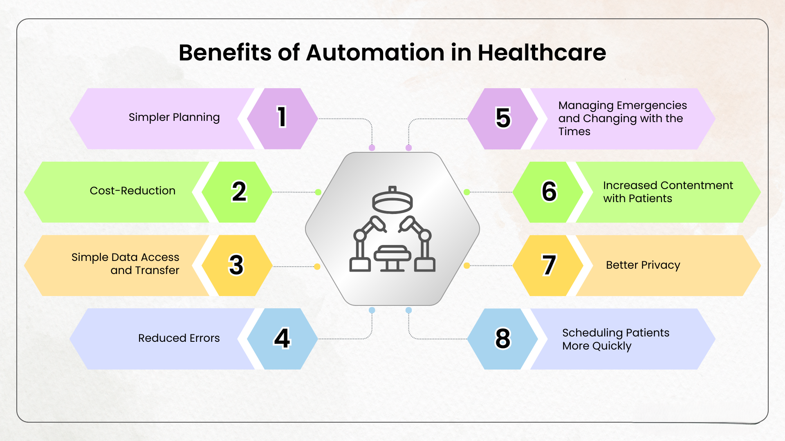

Automation testing allows faster and more reliable testing of software through tools and scripts. I have experience writing, executing, and maintaining test automation using Playwright and Selenium — focusing on web application workflows, UI verification, and regression test coverage.
Automated tests save time, improve accuracy, and allow frequent testing with minimal effort. I use automation to complement manual testing — especially useful for regression, smoke tests, and repetitive tasks.
I’ve applied automation testing in various personal and client projects, especially for improving regression coverage and reducing manual effort. With Playwright’s modern features and Selenium’s wide support, I can build reliable and scalable test automation suites.
I combine both manual and automation approaches to ensure product quality. My automation skills help teams test faster, release confidently, and catch issues early in the cycle.
← Back to Home